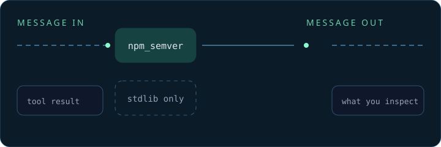

Install
consolepip install npm-semver
Use
pythonfrom npm_semver import (
InvalidRange,
InvalidVersion,
max_satisfying,
min_satisfying,
filter_satisfying,
parse,
parse_range,
satisfies,
sort_versions,
)
satisfies("1.2.3", ">=1.2.0 <2.0.0") # True
satisfies("1.0.0-rc.1", "^1.0.0") # False, prerelease needs its own comparator
satisfies("2.1.0", "1.x || >=2.0.0") # True
sort_versions(["2.0.0", "1.0.0-rc.1", "1.0.0"])
# [Version(1, 0, 0, ('rc', '1')), Version(1, 0, 0), Version(2, 0, 0)]
max_satisfying(["1.9.9", "2.0.0"], "^1.2.0") # Version(1, 9, 9)
min_satisfying(["1.4.2", "1.9.9"], "^1.2.0") # Version(1, 4, 2)
filter_satisfying(["1.0.0", "1.4.2", "2.0.0"], ">=1.1.0") # [Version(1, 4, 2), Version(2, 0, 0)]
parse_range("1.2.3 - 2.0") # ((('>=', Version(1, 2, 3)), ('<', Version(2, 1, 0))),)
parse("v1.2.3-beta.1+sha.abc").prerelease # ('beta', '1')
Anything a range cannot express raises InvalidRange; anything that is not a version raises InvalidVersion. Both subclass ValueError.
Supported range syntax
| form | example | means | ||
|---|---|---|---|---|
| exact | 1.2.3 | =1.2.3 | ||
| caret | ^1.2.3, ^0.2.3, ^1, ^0 | compatible with, stopping at the next left-most non-zero part | ||
| tilde | ~1.2.3, ~1.2, ~1 | patch level, or minor level for a partial version | ||
| comparison | >, >=, <, <=, = | with partial-version semantics | ||
| wildcard | *, 1.x, 1.2.X | the whole line | ||
| partial | 1.2, 1 | the whole minor or major | ||
| hyphen | 1.2.3 - 2.0 | inclusive on both sides, upper bound widened if partial | ||
| union | `1.x \ | \ | >=2.0.0` | any branch |
| conjunction | >=1.2.0 <2.0.0, >=1.2.0, <2.0.0 | all comparators |
Build metadata (+sha) is parsed and printed but ignored in comparisons, as semver requires.
Compatibility
npm-semver deliberately does not read PEP 440 ranges (~=1.2, ==1.*, epochs). If you need those, use packaging. Ranges here are npm's, which is what JavaScript ecosystems, lockfiles and package.json emit.
Development
consolepython -m venv .venv
.venv/bin/pip install -e ".[test]"
.venv/bin/pytest
License
MIT.